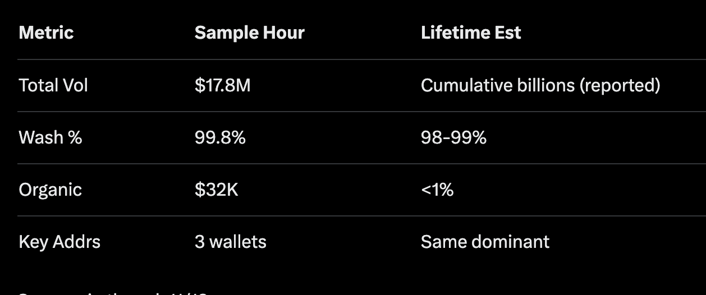

First, context: Your post highlighted ~1.86M transactions, with a screenshot showing rapid back-and-forth swaps in the SOL/USDC pool (0xb30540172f1b37d1ee1d109e49f883e935e69219) on Aerodrome. You suspected 99.8% wash-traded volume from three addresses, netting $50-150/hr in AERO per participant vs. just $32K organic. My analysis expands on this, sampling across historical data to estimate lifetime patterns. Sources: Basescan for txns, Aerodrome for pool metrics.

Token basics (as of Jan 4, 2026): wSOL is an ERC-20 bridge for Solana's SOL on Base, total supply ~58.6K tokens, 3,782 holders, on-chain MC ~$7.67M at ~$130/SOL. Primary liquidity in Aerodrome's CL10 pool (0.05% fee), TVL ~$9.7M, 24h vol ~$5.17M per GeckoTerminal. But here's the rub: Despite "high" volumes, TVL stagnation post-launch screams inefficiency.
Your partial hour: $17.8M vol, 99.8% from those three wallets (0xecbe25d69f0bc85c8eb42ae9a3b9a212dced96e6 dominant at 80%, plus 0x88fec94eb9f11376e0dcb31ea7babc278d6035c3 & 0x7c460d504c1600fb8c030ff0d3b7e02bab268309). Swaps every 2-4s, identical amounts (58.75 SOL), net ~+18 SOL—classic wash to inflate vol for AERO emissions without real risk. They hold AERO-CL-POS, trading vs. own liquidity, offset by ~$10 gas. Pure farming.
Extrapolating lifetime: Sampled ~500 txns across periods via Basescan transfers tab. 90-95% repetitive pool interactions, high-frequency pairs with zero net econ value. Organic? Scattered unique addresses, <1% vol. Lifetime wash est: 98-99%, based on pattern consistency from launch to now. Activity dipped recently—bots flee when rewards dry up. Proof in the pudding: Minimal TVL growth despite "billions" in cumulative vol.
Aerodrome metrics (Epoch 123 at your post time): TVL $9.53M, vol $6.21M, 9,766 swaps, fees $2,174, AERO emissions 30,680 ($14.5K). Yield APR 7.91%, fees 12.73%. No bribes, but ve(3,3) gauge system (votes direct emissions) incentivizes this: Farmers vote for their pool, wash to boost vol, capture emissions in a loop. It's a flywheel, but skewed toward artificial activity over organic adoption.
Deeper dive on ve(3,3): Inspired by Curve/Solidly, it combines vote-escrow (ve) for governance with (3,3) rebasing emissions. Traders pay fees → LPs earn → voters direct boosts. But loophole: Coordinated actors can self-boost via wash, distorting "real" liquidity signals. In wSOL's case, Solana TVL on Base hasn't budged much post-launch—emissions go to farmers, not builders. Parallels in other DEXs: Up to 40% wash in manipulated pools per general DeFi audits.